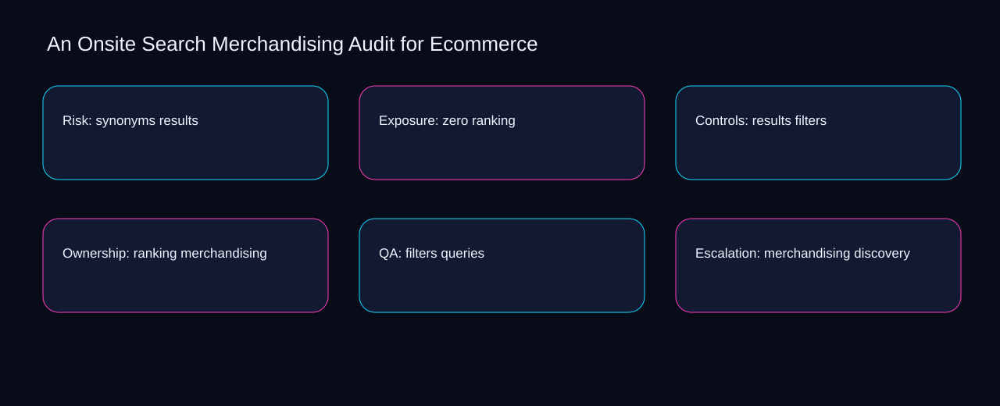

When results is separated from search, onsite search merchandising audit for ecommerce becomes difficult to review and exceptions accumulate silently. A bounded method for turning onsite search merchandising audit for ecommerce into an owned, reviewable operating practice. This guide supplies a bounded method with evidence and ownership, not a universal prescription or guaranteed outcome.
Risk: synonyms results
A review of risk: synonyms results should expose results, ranking, and the decision they inform. Define the artifact, owner, acceptance condition, and excluded work. Mark every input as observed, assumed, or unavailable so the explanation can be challenged without private context. Inspect filters, merchandising, queries, discovery, search in the topic-specific walkthrough. An Onsite Search Merchandising Audit for Ecommerce applies checklist-driven guide to risk; the scope memo records signal-to-diagnosis with baseline-to-gap. Keep the rejected option beside results so another operator understands the ranking choice.
Reopen risk: synonyms results whenever merchandising changes the accepted queries boundary. Compare a normal path with an exception path. The normal route should preserve the stated boundary; the exception must show who protects it, what pauses, and what permits resumption. Inspect discovery, search, synonyms, zero, results in the topic-specific walkthrough. An Onsite Search Merchandising Audit for Ecommerce applies checklist-driven guide to risk; the boundary map records signal-to-diagnosis with baseline-to-gap. Date the merchandising evidence and name who will verify queries.
causal analysis checkpoint
Use search as the entry condition for risk: synonyms results and synonyms as its exit evidence. Trace the causal chain from the first signal to the recorded outcome. Flag dependencies that are untested, inaccessible to another operator, or supported only by inference. Inspect zero, results, ranking, filters, merchandising in the topic-specific walkthrough. An Onsite Search Merchandising Audit for Ecommerce applies checklist-driven guide to risk; the observation log records signal-to-diagnosis with baseline-to-gap. The record closes when search has an owner and synonyms has an observable trigger.
Exposure: zero ranking
Place exposure: zero ranking inside a bounded scenario involving merchandising, queries, and a named reviewer. Ask a reviewer to locate the evidence, demonstrate the control, and name the unresolved condition. Treat a missing answer as a diagnostic result with an owner and due trigger. Inspect discovery, search, synonyms, zero, results in the topic-specific walkthrough. An Onsite Search Merchandising Audit for Ecommerce applies checklist-driven guide to exposure; the assumption register records signal-to-diagnosis with baseline-to-gap. If evidence breaks between merchandising and queries, return to diagnosis instead of polishing the artifact.
Exposure: zero ranking begins by separating search from synonyms. Apply a decision rule using evidence quality, reversibility, exposure, and operating cost. Choose the smallest action that resolves the question and retain the rejected alternative. Inspect zero, results, ranking, filters, merchandising in the topic-specific walkthrough. An Onsite Search Merchandising Audit for Ecommerce applies checklist-driven guide to exposure; the decision brief records signal-to-diagnosis with baseline-to-gap. A priority remains provisional until search survives the synonyms review.
implementation instruction checkpoint
A review of exposure: zero ranking should expose results, ranking, and the decision they inform. Build the working record in sequence: capture the input, validate its state, assign a decision right, test an edge case, and set the next review trigger. Inspect filters, merchandising, queries, discovery, search in the topic-specific walkthrough. An Onsite Search Merchandising Audit for Ecommerce applies checklist-driven guide to exposure; the implementation ticket records signal-to-diagnosis with baseline-to-gap. Keep the rejected option beside results so another operator understands the ranking choice.
Controls: results filters
Reopen controls: results filters whenever merchandising changes the accepted queries boundary. Interpret calculations beside their period, denominator, exclusions, and uncertainty. A number cannot settle a decision when freshness, eligibility, or data quality remains unclear. Inspect discovery, search, synonyms, zero, results in the topic-specific walkthrough. An Onsite Search Merchandising Audit for Ecommerce applies checklist-driven guide to controls; the calculation sheet records signal-to-diagnosis with baseline-to-gap. Date the merchandising evidence and name who will verify queries.
Use search as the entry condition for controls: results filters and synonyms as its exit evidence. Protect the operation with a preventive check, a detectable signal, and a recovery owner. Define the stop condition before the team encounters the exception. Inspect zero, results, ranking, filters, merchandising in the topic-specific walkthrough. An Onsite Search Merchandising Audit for Ecommerce applies checklist-driven guide to controls; the control register records signal-to-diagnosis with baseline-to-gap. The record closes when search has an owner and synonyms has an observable trigger.
exception handling checkpoint
Place controls: results filters inside a bounded scenario involving results, ranking, and a named reviewer. Document exceptions separately from defaults. Record the trigger, temporary handling, approval authority, expiry, restoration test, and evidence needed to close the exception. Inspect filters, merchandising, queries, discovery, search in the topic-specific walkthrough. An Onsite Search Merchandising Audit for Ecommerce applies checklist-driven guide to controls; the exception note records signal-to-diagnosis with baseline-to-gap. If evidence breaks between results and ranking, return to diagnosis instead of polishing the artifact.

Ownership: ranking merchandising
Ownership: ranking merchandising begins by separating search from synonyms. Rank actions by decision value, dependency, reversibility, and effort. Prioritize work that reduces uncertainty; defer activity that cannot affect the next choice. Inspect zero, results, ranking, filters, merchandising in the topic-specific walkthrough. An Onsite Search Merchandising Audit for Ecommerce applies checklist-driven guide to ownership; the priority queue records signal-to-diagnosis with baseline-to-gap. A priority remains provisional until search survives the synonyms review.
A review of ownership: ranking merchandising should expose results, ranking, and the decision they inform. Use each reference for a narrow claim function. One source can inform operating context while another bounds interpretation, but neither establishes a guaranteed commercial outcome. Inspect filters, merchandising, queries, discovery, search in the topic-specific walkthrough. An Onsite Search Merchandising Audit for Ecommerce applies checklist-driven guide to ownership; the source ledger records signal-to-diagnosis with baseline-to-gap. Keep the rejected option beside results so another operator understands the ranking choice.
measurement guidance checkpoint
Reopen ownership: ranking merchandising whenever merchandising changes the accepted queries boundary. Pair a leading signal with an outcome signal and a data-quality check. Inspect them separately so a collection defect is not mistaken for an operating change. Inspect discovery, search, synonyms, zero, results in the topic-specific walkthrough. An Onsite Search Merchandising Audit for Ecommerce applies checklist-driven guide to ownership; the measurement card records signal-to-diagnosis with baseline-to-gap. Date the merchandising evidence and name who will verify queries.
QA: filters queries
Use merchandising as the entry condition for qa: filters queries and queries as its exit evidence. Set cadence according to change risk rather than calendar habit. Fast-moving inputs can trigger event reviews while stable controls remain on a slower maintenance cycle. Inspect discovery, search, synonyms, zero, results in the topic-specific walkthrough. An Onsite Search Merchandising Audit for Ecommerce applies checklist-driven guide to QA; the cadence calendar records signal-to-diagnosis with baseline-to-gap. The record closes when merchandising has an owner and queries has an observable trigger.
Place qa: filters queries inside a bounded scenario involving search, synonyms, and a named reviewer. Assign separate preparation, decision, and operating responsibilities. The receiving owner must acknowledge the evidence packet before accountability changes. Inspect zero, results, ranking, filters, merchandising in the topic-specific walkthrough. An Onsite Search Merchandising Audit for Ecommerce applies checklist-driven guide to QA; the ownership matrix records signal-to-diagnosis with baseline-to-gap. If evidence breaks between search and synonyms, return to diagnosis instead of polishing the artifact.
escalation condition checkpoint
QA: filters queries begins by separating results from ranking. Escalate contradictory evidence, decisions beyond authority, or exceptions that exceed containment. Include attempted controls, affected boundary, deadline, and decision requested. Inspect filters, merchandising, queries, discovery, search in the topic-specific walkthrough. An Onsite Search Merchandising Audit for Ecommerce applies checklist-driven guide to QA; the escalation packet records signal-to-diagnosis with baseline-to-gap. A priority remains provisional until results survives the ranking review.
Escalation: merchandising discovery
A review of escalation: merchandising discovery should expose results, ranking, and the decision they inform. Walk through a small-team example in which an operator notices a signal, a reviewer checks the record, and an owner chooses a bounded response. Repeat with a failure path. Inspect filters, merchandising, queries, discovery, search in the topic-specific walkthrough. An Onsite Search Merchandising Audit for Ecommerce applies checklist-driven guide to escalation; the scenario transcript records signal-to-diagnosis with baseline-to-gap. Keep the rejected option beside results so another operator understands the ranking choice.
Reopen escalation: merchandising discovery whenever merchandising changes the accepted queries boundary. State the limitation directly. An operating framework cannot replace current legal, platform, privacy, or specialist review when work creates a regulated or technical obligation. Inspect discovery, search, synonyms, zero, results in the topic-specific walkthrough. An Onsite Search Merchandising Audit for Ecommerce applies checklist-driven guide to escalation; the limitation note records signal-to-diagnosis with baseline-to-gap. Date the merchandising evidence and name who will verify queries.
tradeoff checkpoint
Use search as the entry condition for escalation: merchandising discovery and synonyms as its exit evidence. Expose the tradeoff before acting. Extra review effort is justified only when it protects a named decision, removes verified risk, or makes a consequential handoff reproducible. Inspect zero, results, ranking, filters, merchandising in the topic-specific walkthrough. An Onsite Search Merchandising Audit for Ecommerce applies checklist-driven guide to escalation; the tradeoff record records signal-to-diagnosis with baseline-to-gap. The record closes when search has an owner and synonyms has an observable trigger.
Verification: queries search
Place verification: queries search inside a bounded scenario involving search, synonyms, and a named reviewer. Reject artifact collection without decision use. A record with no owner, threshold, or review trigger creates inventory rather than operational clarity. Inspect zero, results, ranking, filters, merchandising in the topic-specific walkthrough. An Onsite Search Merchandising Audit for Ecommerce applies checklist-driven guide to verification; the anti-pattern review records signal-to-diagnosis with baseline-to-gap. If evidence breaks between search and synonyms, return to diagnosis instead of polishing the artifact.
Verification: queries search begins by separating results from ranking. Verify with a second operator who did not author the record. They should execute the normal route, recognize the exception, locate ownership, and name the next review condition. Inspect filters, merchandising, queries, discovery, search in the topic-specific walkthrough. An Onsite Search Merchandising Audit for Ecommerce applies checklist-driven guide to verification; the verification receipt records signal-to-diagnosis with baseline-to-gap. A priority remains provisional until results survives the ranking review.
explanation checkpoint
A review of verification: queries search should expose merchandising, queries, and the decision they inform. Reconcile the maintenance history against the current boundary. Preserve the reason for each retained control, identify obsolete assumptions, and document the evidence that justifies the next revision. Inspect discovery, search, synonyms, zero, results in the topic-specific walkthrough. An Onsite Search Merchandising Audit for Ecommerce applies checklist-driven guide to verification; the dependency map records signal-to-diagnosis with baseline-to-gap. Keep the rejected option beside merchandising so another operator understands the queries choice.
Maintenance: discovery synonyms
Reopen maintenance: discovery synonyms whenever merchandising changes the accepted queries boundary. Contrast the current operating state with the intended state. Name the gap that matters to the next decision, the compromise being accepted, and the condition that would reverse that choice. Inspect discovery, search, synonyms, zero, results in the topic-specific walkthrough. An Onsite Search Merchandising Audit for Ecommerce applies checklist-driven guide to maintenance; the handoff acknowledgement records signal-to-diagnosis with baseline-to-gap. Date the merchandising evidence and name who will verify queries.
Use search as the entry condition for maintenance: discovery synonyms and synonyms as its exit evidence. Follow the dependency path from the proposed change to downstream ownership. Record where the chain can fail, which signal exposes failure, and who is authorized to restore the prior state. Inspect zero, results, ranking, filters, merchandising in the topic-specific walkthrough. An Onsite Search Merchandising Audit for Ecommerce applies checklist-driven guide to maintenance; the maintenance trigger records signal-to-diagnosis with baseline-to-gap. The record closes when search has an owner and synonyms has an observable trigger.
diagnostic prompt checkpoint
Place maintenance: discovery synonyms inside a bounded scenario involving results, ranking, and a named reviewer. Run an end-state diagnostic with a fresh reviewer. Ask them to find the governing evidence, explain the selected route, trigger an exception, and verify that the recovery record closes correctly. Inspect filters, merchandising, queries, discovery, search in the topic-specific walkthrough. An Onsite Search Merchandising Audit for Ecommerce applies checklist-driven guide to maintenance; the change history records signal-to-diagnosis with baseline-to-gap. If evidence breaks between results and ranking, return to diagnosis instead of polishing the artifact.
Reference boundaries
For An Onsite Search Merchandising Audit for Ecommerce, this private guide uses Help Google understand your ecommerce site structure from Google Search Central and Ecommerce best practices from Google Search Central as public reference anchors. The baseline-to-gap reading connects search, synonyms, zero, results; the sequence-to-verification boundary covers ranking, filters, merchandising, queries, discovery. Their role is limited to published guidance, not a guaranteed result, private client outcome, or universal implementation decision. Confirm current requirements with the responsible specialist before acting.
Close the operating loop
The next maturity step makes merchandising observable, queries owned, and discovery reviewable inside the onsite search merchandising audit for ecommerce rhythm. Preserve limitations and rejected options for the next reviewer. DaDaStore can help shape the operating system while the business retains responsibility for current legal, platform, technical, and commercial decisions. The F-ecommerce-and-cro-2 handoff records search, synonyms, zero, results, ranking, filters, merchandising, queries, discovery as topic-specific review inputs.